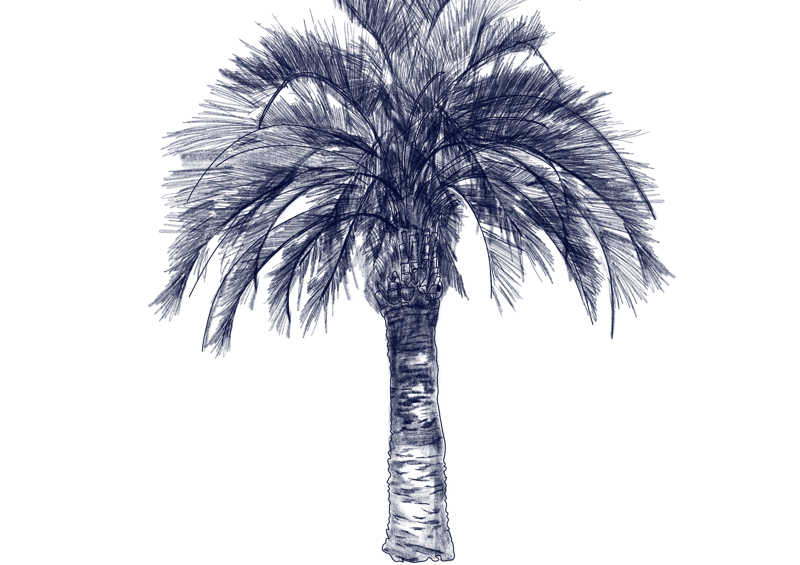

Butia odorata
Butia

La Butia (Butia odorata) es una especie de tipo flora perteneciente a la familia Arecaceae (palmeras).
Se distribuye en las zonas del sur de Brasil, noreste de Argentina, Paraguay y Uruguay, y es nativa de la zona de Punta del Diablo. Su estado de conservación es estable, aunque el ecosistema de palmares naturales donde predomina enfrenta amenazas por sobrepastoreo y agricultura que afectan la regeneración natural.
Su morfología se destaca por ser una palmera de raíz profunda que alcanza hasta 9 metros de altura, con hojas largas pinnadas de color verde azulado a grisáceo, y flores amarillas o rojizas en inflorescencias grandes; produce frutos comestibles anaranjados llamados butiás.
Su rol en el ecosistema es conformar bosques monoespecíficos llamados palmares, que constituyen hábitats claves para numerosas especies animales, sobre todo aves, además de ayudar en la estabilización de suelos y ofrecer recursos alimenticios locales.